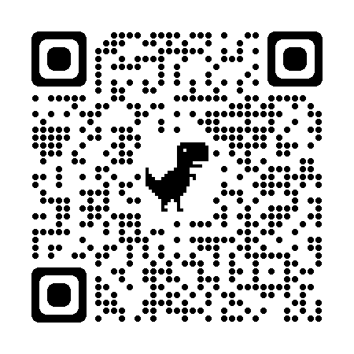
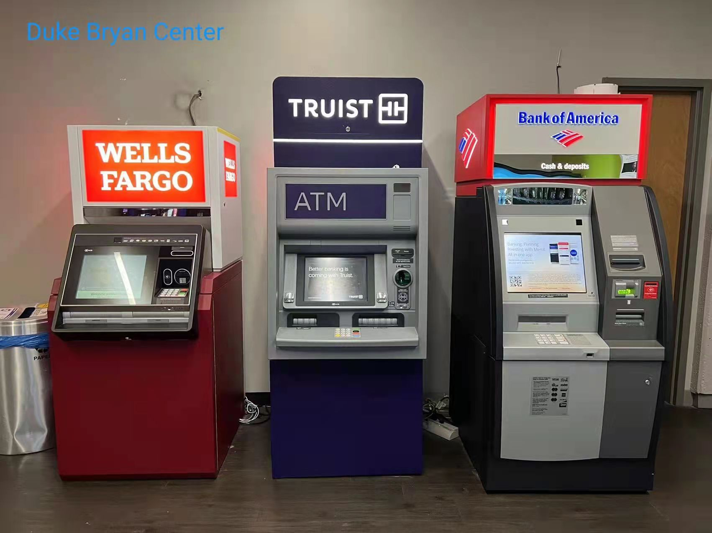

一、必须疫苗(本科/研究生/专业学生)
二、推荐但非强制
三、提交步骤
一、宿舍系统总览
Duke大学住宿分为两大阶段：一年级统一在East Campus(东校区)，二年级及以上在West Campus(西校区)。两个校区各自具有独特的社区文化、生活特色与管理体系。
East Campus东校区(一年级)
West Campus西校区(二年级及以上)
二、East Campus14个House详解
每个House约60-70名一年级学生，分为3-4个wings(翼楼)，每wing约15-20人。House内有shared kitchen、common room、dining area、laundry等公共设施。每个House配一名Faculty-in-Residence(教授或senior staff)及多名peer advisors。


三、West Campus宿舍楼详解


四、Swift Quad（独立校区）


五、Room Selection与选房策略
六、一年级宿舍申请与Roommate匹配流程
七、宿舍规则与社区生活
Roommate共存建议
八、研究生校外住宿 — Erwin Road公寓
九、宿舍床尺寸与床品购买指南
East Campus 各House床尺寸
West Campus 各宿舍床尺寸
🛒 Mattress Topper vs Pad 购买建议
一、2025-26学年学费总览
二、2025-26缴费截止日期
三、缴费方式
四、常见问题
官方参考链接 Official Resources
Duke校园内共设有7个Amazon Parcel Locker自提柜，2022年11月由Amazon与Duke Campus Mail Services合作安装，分布在East Campus、West Campus和Central Campus的宿舍楼附近，学生可在下单时直接选择就近的Locker地址收包裹，全程无需等待快递员上门。
7个Locker具体位置一览(来源：Duke Campus Mail Services官网)
| Locker名称 | 所在建筑 | 校区 | 具体地址 |
|---|---|---|---|
| Ceyln | Swift Apartments | Central Campus | 300 Swift Ave, Durham, NC 27705 |
| Elsa | Bell Tower Breezeway | East Campus | 40 Brodie Gym Drive, Durham, NC 27705 |
| Elinor | Blackwell Breezeway | East Campus | 51 Brodie Gym Drive, Durham, NC 27705 |
| Ljuba | East Campus Union (室内) | East Campus | 1324 Campus Drive, Durham, NC 27705 |
| Lennie | Randolph Breezeway | East Campus | 50 Brodie Gym Drive, Durham, NC 27705 |
| Arkadiusz Jad | Edens (near Schafer House) | West Campus | 117 Edens Drive, Durham, NC 27705 |
| Dawood | Keohane Breezeway | West Campus | 101 Wannamaker Drive, Durham, NC 27705 |
注：East Campus有4个Locker(Elsa、Elinor、Ljuba、Lennie)，West Campus有2个(Arkadiusz Jad、Dawood)，Central Campus有1个(Ceyln)。一年级新生住East Campus，以上四个Locker均步行可达。
使用流程
注意事项
实用链接

Bank of America、Wells Fargo、Truist三台ATM，位于Bryan Center一楼大厅，24小时可用
Venmo是什么？Venmo是美国最主流的手机端P2P(个人对个人)转账应用，由PayPal旗下运营(venmo.com)。全美有超过8300万活跃用户，大学生群体中渗透率极高，PayPal CEO公开表示"全美1900万大学生中超过一半有Venmo账户"。
Duke学生怎么用？在Duke校园中，Venmo几乎是学生之间收付款的默认工具，几乎人手一个账户。典型场景包括：
怎么开户？下载Venmo App → 用美国手机号注册 → 绑定美国银行账户或借记卡 → 完成身份验证。国际生需要先开好美国银行账户才能绑定。未验证账户每周转账上限$299.99，完成身份验证后可提升至每周$6,999.99。
转账费用：Venmo账户余额互转完全免费；从银行账户或借记卡转账也免费(1-3个工作日到账)；若要即时到账(Instant Transfer)转至银行账户，收取1.75%手续费(最低$0.25，最高$25)。
注意事项：付款发出后无法撤销，务必核对收款人用户名；转账备注默认公开(好友可见)，涉及隐私的备注建议改为"仅自己可见"；不建议用Venmo接收来自陌生人的大额转账，有被冻结账户风险。
与Zelle的区别：Zelle直接走银行账户之间转账，无需单独App，适合家长从中国账户以外的美国账户向孩子转账；Venmo有App内余额，更适合学生之间高频小额均摊。Duke学生日常优先用Venmo，家长转生活费多数用Zelle或银行电汇。
Venmo官网注册与下载 Venmo帮助中心(常见问题)Duke的资助体系主要基于家庭经济需要提供助学金，不需要偿还。资助来源包括 Duke本身提供的机构助学金(institutional grants)以及联邦/州政府资助(如Pell Grant)。约50%的本科生会获得某种助学金。
满足100%需求。Duke承诺满足所有被录取学生经评估后的经济需求(通过FAFSA+CSS Profile计算)。如家庭支付能力低，大学会用助学金弥补差额。
Duke与UNC-Chapel Hill联合设立的最高荣誉奖学金，由Julian Robertson于2000年捐资2400万美元创立，旨在培养改变社会的领袖人才。
覆盖内容：八学期全额学费+住宿+餐费+强制性费用；三个暑期资助(社区服务/领导力培训/国际探索)；全年学术会议经费；两学期海外学习资助。
特色：学者拥有Duke和UNC"双重公民"身份，需在对方校园完成至少5门课；大二下学期需在"姐妹校园"居住一学期。Robertson Express Bus往返两校约30-40分钟。每届全美录取约25-30人。
申请截止：11月15日(需单独申请，与Duke录取申请分开)；对象为高中生，也接受大一在读生申请。
Duke历史最悠久的荣誉奖学金，1925年由Benjamin N. Duke为纪念其子Angier Buchanan Duke而设立，为旗舰级学术奖学金。历届获奖者曾荣获Marshall、Rhodes奖学金及普利策奖。每届约录取15人。
覆盖内容：八学期全额学费+住宿+餐费+强制性费用(估计四年总价值约$315,000)；若仍有经济需求，Duke助学金补足缺口；国内外暑期体验丰厚资助；大二暑期可赴牛津大学New College学习。
申请对象：全球所有申请Duke的高中生，无需单独申请，招生时自动考量；评选标准为卓越学术能力、创造力和领袖潜质。
2010年由Martha L. 和Bruce A. Karsh捐资设立，是Duke专为国际本科生设立的最高荣誉奖学金，现有学者来自博茨瓦纳、巴西、印度、肯尼亚、越南等数十个国家和地区。
覆盖内容：全额学费+住宿+餐费+强制性费用+经评估超出上述费用的额外经济需求；三个暑期科研/无薪实习/学术拓展资助；Faculty Advisor一对一指导；加入OUSF学者社区。
申请条件：须为非美国公民国际生；须在申请Duke时同时申请助学金(勾选"financial aid interest"并提交CSS Profile)；以学术能力和经济需求为主要评选标准。
以Duke首位非裔美国人学生会主席Reginaldo Howard命名，面向具有非裔传承的学生，奖励在学术成就、领导力和社会正义服务方面表现杰出的申请者。
覆盖内容：四年全额学费+强制性费用+住宿+餐费；融入OUSF学者网络，参与civic engagement活动；无需单独申请，录取时自动考量。
专为来自北卡罗来纳州或南卡罗来纳州的学生设立，奖励在学业、社区参与和领袖潜质方面表现突出者。
覆盖内容：八学期全额学费+住宿+餐费+强制性费用；两个暑期体验资助；须为南北卡居民，无需单独申请。
奖励对跨学科研究、协作思维和创新学术充满热情的学生，同时须展示经济需求。
覆盖内容：全额学费+住宿+餐费+强制性费用；若仍有经济缺口，Duke助学金补足；涵盖暑期科研和拓展体验资助；无需单独申请，经济需求为必要条件之一。
Trinity Scholarships：面向北卡/南卡不同地区的优秀学生，部分奖项同时要求经济需求，涵盖多个具体子项目；无需单独申请，按地区和学业自动考量。
Alumni Endowed Scholarship：面向Duke校友的子女或孙子女，同时需具备出色学业成绩和一定程度的经济需求；由OUSF录取时自动考量，无需单独申请。
国际学生资助较少，通常不是need-blind招生(需要资助的国际申请者录取难度更大)。但部分优秀奖学金对国际生开放。
募款与基金捐赠(endowments/donors)、学费收入、政府资助(联邦/州grant)、学生工作学习(work-study)。
本科生全年总费用(未扣助学金前)约$98,500/年，包括学费、住宿、膳食、书籍、个人开支等。
预计家庭贡献(Expected Family Contribution)通过FAFSA+CSS Profile评估。
| 家境 | 总费用 | 家庭贡献 | 助学金 | Work-Study | 联邦贷款 |
|---|---|---|---|---|---|
| 例1：家庭贡献$0 | $98,500 | $0 | $94,200 | $4,300 | $0 |
| 例2：家庭贡献$10,000 | $97,500 | $10,000 | $78,700 | $4,800 | $4,000(可选) |
| 例3：家庭贡献$20,000 | $98,500 | $20,000 | $68,700 | $4,800 | $5,000 |
家庭收入< $65,000：通常无校方强制贷款($0)
家庭收入较高：可能包含$3,000–$5,000的联邦贷款部分
Duke提供Net Price Calculator和MyinTuition Calculator，可输入家庭收入、人数、资产等获取个性化资助预测。相关链接
| 贷款类型 | 固定利率 | 说明 |
|---|---|---|
| Direct Subsidized Loan(有补贴贷款) | 6.53% | 在校期间、宽限期及延期期间，政府代付利息，不会利滚利 |
| Direct Unsubsidized Loan(无补贴贷款) | 6.53% | 贷款发放当日起计息，若在校期间不付利息，利息会资本化(加入本金) |
还款时间为毕业后6个月宽限期，之后开始正式还款，标准还款期10年。
Merit Scholarships — 官方页面
需求型助学金 — 官方页面
Duke校园停车由 Parking & Transportation Services（PTS） 统一管理。全校近13,000名学生，停车位有限，不保证每位学生都能获得停车位，分配依据是学生的居住地或学习地点。停车费每年6月自动从Bursar账户扣除，每年涨幅约3–5%。
杜克大学约80%的本科生就读于 Trinity College of Arts & Sciences，是杜克的文理教育核心。Trinity 规模大、专业多元，强调跨学科探索与自由组合，学生可以在人文、社科、自然科学、定量科学等广泛领域中自由搭配主修、辅修与证书，打造个性化的学术路径。
Duke Pratt School of Engineering 是杜克大学的工程学院，与文理学院（Trinity College）并列，是全美顶尖工程学院之一。Pratt 规模较小，本科生约1000人，师生比高，学术氛围紧密，同时依托杜克整体的文理教育资源，强调工程与人文、医学、政策的跨学科融合。
Pratt 提供以下本科专业（BSE 学位）：
总体原则 Duke承认College Board的AP考试，4分或5分可获得学分，部分科目仅限5分。所有AP成绩须由College Board直接发送给Duke注册处(CEEB代码：5156)，不能使用招生时自行申报的成绩。建议在大一注册前提前发送成绩，但毕业前提交均有效，无需另外申请批准。
Trinity文理学院：AP学分使用规则
毕业共需34学分，AP学分最多计入2个选修学分；若提前毕业最多可多用6个加速学分。即便有超过2个AP学分，其余均可用于豁免入门课程、满足专业/辅修要求，但不计入34学分。AP英语学分不免除Writing 101要求。
Pratt工程学院：AP学分使用规则(2025年秋入学起重大变化)
AP学分可以做什么(Pratt)：
与Trinity的关键区别：Pratt和Trinity毕业都需要34学分。Trinity规定AP最多只能抵扣其中2个学分计入毕业总学分(加速毕业最多8个)，上限严格。Pratt没有这个"最多2学分"的硬性上限，AP学分可以直接替代毕业所需的核心课学分，实际上如同时有Calc BC(5分，2学分) + Chem(5分，1学分) + Physics C Mechanics + E&M(各1学分，共2学分) + CS A(1学分，共约6-7个AP学分)，这6-7个学分都可直接计入34学分毕业总学分，相当于节省了大一整整一学年的核心课负担，只剩约27-28学分须在Duke修读。
AP学分不能做什么(2025年秋入学，即2029届起)：
来源：Duke Chronicle 2025年11月报道，Pratt副院长Carmen Rawls确认："我们强烈认为Pratt学生应该在大学期间亲身接受文理教育。"
Trinity AP学分完整对照表(官方，含Duke课程等效编号) Duke注册处AP学分官方说明(2025-26年适用)AP科目对照表(4分或5分除非另注)
| AP科目 | 所需分数 | Duke等效学分 | 可选修课程 |
|---|---|---|---|
| African American Studies | 4或5 | AAAS 99 | 任意课程 |
| Art History | 5 | ARTHIST 20 | 200-400级课程 |
| Studio Art: Drawing / 2-D / 3-D | 5 | ARTSVIS 21 | 高级课程 |
| Biology | 4或5 | BIOLOGY 20或21 | BIOLOGY 201L或202L(需先修CHEM) |
| Chemistry | 4 | CHEM 20 | CHEM 110DL(秋季)或101DL |
| Chemistry | 5 | CHEM 21 | CHEM 201DL或110DL；Pratt BME须另修CHEM 110DL+210DL |
| Chinese: Language and Culture | 4或5 | CHINESE 203 | CHINESE 204或200-400级 |
| Computer Science A | 4或5 | COMPSCI 101L | COMPSCI 201 |
| Computer Science: Principles | 5 | COMPSCI 20 | 任意CS课程 |
| Economics: Macro/Micro | 不接受 | N/A | N/A |
| English: Literature | 4或5 | ENGLISH 20 | 任意英文课(不免Writing 101) |
| English: Language | 4或5 | ENGLISH 22 | 任意英文课(不免Writing 101) |
| Environmental Science | 4或5 | ENVIRON 20 | ENVIRON 201 |
| French: Language and Culture | 5 | FRENCH 20 | FRENCH 204或300级 |
| German: Language and Culture | 4 | GERMAN 29 | GERMAN 204或305S |
| German: Language and Culture | 5 | GERMAN 29 | GERMAN 305S或以上 |
| History: European | 4或5 | HIST 25 + 26(2学分) | 任意课程；History专业最多计1个AP学分 |
| History: United States | 4或5 | HIST 23 + 24(2学分) | 任意课程 |
| History: World | 4或5 | HISTORY 21 | 任意课程 |
| Human Geography | 不接受 | N/A | N/A |
| Italian: Language and Culture | 4 | ITALIAN 203 | ITALIAN 301 |
| Italian: Language and Culture | 5 | ITALIAN 203 | 任意300级课程 |
| Japanese: Language and Culture | 4 | JAPANESE 203 | JAPANESE 204 |
| Japanese: Language and Culture | 5 | JAPANESE 203 | JPN 204、305或306 |
| Latin: Literature | 4 | LATIN 25 | LATIN 204 |
| Latin: Literature | 5 | LATIN 25 | 300级课程 |
| Math: Calculus AB | 5 | MATH 21 | MATH 122L(秋)或112L(春) |
| Math: Calculus BC | 4 | MATH 21 | MATH 122L(秋)或112L(春) |
| Math: Calculus BC | 5 | MATH 21 + 22(2学分) | MATH 202、212、218或221 |
| Music: Theory | 4或5 | MUSIC 161 | 任意课程 |
| Physics C: Mechanics | 4或5 | PHYSICS 25 | 咨询物理系；Pratt须另修至少一门Duke物理课 |
| Physics C: E&M | 4或5 | PHYSICS 26 | Pratt须选修PHY 153L以上，或放弃AP学分选PHY 152L |
| Physics 1 / Physics 2(代数) | 不接受 | N/A | N/A |
| Political Science: US Gov | 4或5 | POLSCI 20 | 200-400级课程 |
| Political Science: Comparative Gov | 4或5 | POLSCI 21 | 200-400级课程 |
| Psychology | 5 | PSYCHOLOGY 11 | 任意课程 |
| Spanish: Language and Culture | 5 | SPANISH 204 | 300级课程 |
| Spanish: Literature and Culture | 4或5 | SPANISH 204 | 300级课程 |
| Statistical Science | 5 | STA 20 | STA 101、102、198或199；仅限Trinity，Pratt不接受 |
不被接受的AP科目：Economics(宏/微观)、Physics 1、Physics 2(代数)、Human Geography。Calculus AB需5分才得MATH 21学分，4分无学分。Statistics AP仅对Trinity学生有效。发送成绩拨College Board：888-225-5427，Duke CEEB代码：5156。
谁可以申请互转 Trinity文理学院和Pratt工程学院的在校本科生，在各自学院完成至少一个学期的学习后，均可申请转往对方学院。申请获批前，学生须继续满足原学院的所有学业要求，原顾问负责注册资格直到正式转籍完成。
Trinity转Pratt：主要要求
Pratt转Trinity：主要要求
申请流程
Pre-med track不是一个具体专业，而是一种为将来申请医学院(Medical School)做准备的学习路线。在美国大学里(包括Duke University)，你可以主修任何专业，生物、化学、心理学、经济学都可以，同时完成医学院要求的先修课程，这条路线就叫pre-med。
需要特别说明的是，Duke本校学生申请Duke School of Medicine并没有特别优待，录取标准与其他申请者相同。拥有Duke学籍不等于进Duke医学院有捷径，家长和学生需要对此有清醒认知。
| 课程 |
|---|
| Calculus I - recommended for Physics at Duke and for schools with a math requirement |
| General/Inorganic Chemistry - 2 courses with lab |
| Organic Chemistry - 2 courses with lab |
| Biology - 2 courses with lab |
| Physics - 2 courses with lab |
| Biochemistry - 1 course |
| Medical Sociology - 1 course |
| Psychology - 1 course |
| Statistics - 1 course |
| English/Writing - 2 courses |
Courses should be taken for a grade and not S/U. Most medical schools will not accept S/U grades.
申请医学院必须参加Medical College Admission Test(MCAT)。考试分为四个部分：化学与物理基础(Chem/Phys)、批判性分析与推理(CARS)、生物与生化基础(Bio/Biochem)、心理学与社会学(Psych/Soc)，每部分满分132分，总分满分528分。
考试时长约7.5小时(含休息)，每年可考多次，成绩有效期3年。备考时间通常需要3–6个月的系统复习，建议在完成大部分先修课后再参加。
在Duke申请的竞争环境下，515+(约第90百分位)才比较有竞争力，冲顶级医学院建议518+。全美MD医学院录取平均分约511–512，DO医学院约505–507。
医学院不只看成绩，还非常看重课外经历的深度和广度，包括：医院志愿者(建议累计100小时以上)、Shadow医生跟诊(了解医生日常工作)、科研经历(最好有持续2年以上的lab参与)、社区服务、领导力角色。这些经历共同构成你申请时"为什么要当医生"的故事基础。
美国医学院分两类：MD(allopathic，对抗疗法医学)和DO(osteopathic，整骨疗法医学)。MD通过AMCAS系统申请（AMCAS，即American Medical College Application Service，美国医学院申请服务系统，由美国医学院协会AAMC运营，是大多数MD医学院的集中申请平台，申请者只需填写一份申请表即可同时申请多所学校），DO通过AACOMAS系统申请，两套系统完全独立，可以同时申请。
DO医学院的录取平均GPA和MCAT要求略低于MD，但DO毕业生需要额外通过COMLEX执照考试，部分专科住院医竞争仍不如MD毕业生有优势。对于GPA或MCAT边缘(3.7–3.8/508–512)的学生，同时申请DO是合理的策略，不是退而求其次，而是扩大录取机会的理性选择。另外德克萨斯州有独立的TMDSAS申请系统，仅适用于德州公立医学院。
优点：职业稳定、收入高(住院医结束后年收入通常$200k+)、社会影响力大、帮助他人的成就感强。
挑战：GPA要求极高(3.9+才有竞争力)、课程难度大、竞争激烈、总训练时间长(本科4年+医学院4年+住院医3–7年=共10–15年)、心理压力持续贯穿整个过程。
先问自己：真喜欢医学本身，还是喜欢"医生"这个身份标签？能否接受10年以上的学习和培训？能否在高压、高强度环境中长期维持状态？Pre-med不等于必须学Biology，很多成功申请者主修经济学、心理学、工程、公共政策，医学院反而欣赏多样化背景。不要把"医生"当唯一出路，要提前想好Plan B(PA、NP、公共卫生、PhD、医疗行业等)，因为医学院申请整体录取率并不高。
Duke的现实：课程强度高、同学普遍很强(许多人高中是绝对顶尖)、医学资源极好(有Duke University Hospital+强大科研平台)，但正因如此，GPA比你想象中更难保。
第一：GPA达到3.9。第二：确认自己真的适合并热爱医学。大一不是拼科研、拼简历的时候，是打基础、确认方向的时候。
最常见的错误：大一把生物+化学+物理+微积分全堆在一起，结果GPA掉到3.5以下。在Duke这种情况极为普遍，一旦发生很难挽救。
推荐节奏，Fall学期：General Chemistry I + Writing/Seminar + 一门相对轻松的人文或社科课(统计或心理都是好选择，同时为MCAT打基础)。Spring学期：Biology I + General Chemistry II + 一门平衡性课程。不建议大一就修Organic Chemistry，那是大二的核心战场。
大一上学期专注GPA，不要分心。大一下学期开始申请Duke University Hospital的志愿者项目，安排1–2次跟诊体验，有条件尽量联系进一个lab(不需要马上出成果，先建立关系)。
GPA是否达到3.9？是否真的喜欢Chem/Bio的学习方式？在医院环境里是否感到舒适而非排斥？如果GPA低于3.5，要认真重新评估节奏和策略。在Duke做pre-med，你可能第一次感觉自己"不再是最优秀的那个"，这种感受很正常，但不要让焦虑驱动决策。
大一核心原则：保GPA优先于堆履历；节奏慢一点比崩掉强；不要被同学的节奏带跑；尽早shadow医生确认兴趣；始终保留Plan B。
课程：General Chemistry I & II、Writing/First-Year Seminar、统计或心理学(为MCAT打基础)、一门相对安全的人文课。不建议同时修Bio+Chem+Physics全堆，也不建议大一就上Organic Chemistry。
课外：大一下学期开始医院volunteer，可shadow医生1–2次，有条件尽量进lab建立关系。
课程重点：Organic Chemistry I & II(公认pre-med最难关)、Biology系列、Biochemistry(可大二下或大三上)。这是整个pre-med轨道GPA波动最大的一年，需要集中火力。
科研：稳定进入一个lab，每周投入6–10小时即可，不要为科研牺牲课程成绩。
临床：持续volunteer，开始固定shadow一位医生，累积真实的临床观察经验。
MCAT时间线：大三秋季轻量准备(做题型熟悉)→大三春季系统复习(3–4个月全力投入)→大三暑假前(5–6月)参加考试。考完马上进入申请季，时间非常紧张。
申请准备：撰写Personal Statement(核心文书，需要多稿打磨)、联系3–5位推荐人(至少包含科研导师、临床医生、一位学术教授)、整理Activities列表。6月初通过AMCAS系统递交主申请，7–9月补充各校Secondary essays，9月起陆续收到面试邀请。这是整个pre-med旅程中压力最集中的阶段。
全力参加医学院面试(MMI或传统面试形式)，切勿出现senioritis，大四成绩下滑会被医学院注意到，甚至导致录取撤销。同时完成本科major要求。如当年未获录取，应认真规划gap year方向，而不是仓促再申。
GPA：3.9+；MCAT：515–518；临床小时：150–300小时；科研：2年以上持续参与；领导力：1–2个有持续深度的角色。选课策略比拼难度更重要，不要为了"看起来厉害"而选最难的教授。Duke的医学资源强大，但不会自动转化为医学院申请的加分。
Duke同时拥有Trinity College of Arts & Sciences(文理学院)和Pratt School of Engineering(工程学院)，很多pre-med学生会纠结主修哪个方向。
Biology(Trinity)：先修课天然覆盖，课程节奏相对为pre-med设计，GPA更容易控制，但班里竞争者也多是pre-med，曲线评分竞争激烈。GPA维护难度：中等。
Engineering(Pratt)：逻辑和量化训练强，申请时有"差异化"优势，但工程核心课难度高，同时还要修满所有pre-med先修课，GPA极难保持。GPA维护难度：高。在Duke同时做工程+pre-med，是真正的体力和脑力双重消耗。
医学院不偏爱任何特定专业，核心看GPA、MCAT和故事完整度。高GPA的工程背景申请者非常亮眼，但低GPA的工程生反而会被认为"连本专业都学不好"。医学院更喜欢高GPA的工程生，而不是"选了难专业但GPA3.5"的工程生。
Biology：课表灵活，有时间做科研、volunteer，有余力double major或辅修。
Engineering：Pratt必修课锁死大量时间，实验和项目耗时严重，临床时间难以保障，整体workload显著高于Trinity。
Biology：研究、公共卫生、Master/PhD、医疗相关行业，但收入路径不如工程直接。
Engineering：医疗器械、生物医学工程、Tech、咨询、投行都是强力Plan B，若最终不进医学院，经济回报和职业发展空间更大。
如果数理基础扎实、时间管理能力强、GPA能稳定在3.9+，可以考虑Engineering+pre-med这条高风险高回报路线。如果医学是第一目标、不想赌GPA、对工程本身兴趣有限，Biology是更稳妥的选择。
一句话总结：Biology=稳定通道，Engineering=高风险高回报通道，选错方向比选难课程的代价更大。
Duke是少数几所既有顶级文理学院、又有顶级医学院和附属医院的综合大学，这为pre-med学生提供了独特的资源优势，但很多学生不知道如何主动使用这些资源。
这是pre-med学生最重要的校内资源之一。Pre-Health Advising Office提供一对一顾问预约，可以帮助规划四年课程路线、评估申请竞争力、审阅Personal Statement、协调推荐信和模拟面试。建议大一下学期就预约初次会面，不要等到大三申请季才去找顾问。顾问了解各医学院的偏好，也掌握Duke历届申请人的录取数据，是无可替代的内部资源。
Duke University Hospital是全美顶级医院之一，提供丰富的volunteer机会，让本科生能够真实接触临床环境。建议大一下学期通过Duke Hospital官网申请volunteer项目，早申请早排上。此外Duke Medical Center内有大量PI(Principal Investigator)在招募本科生科研助理，进lab不需要提前有科研经验，主动发邮件询问是常见做法。
DGHI提供本科生参与全球健康研究和项目的机会，包括暑期海外实习和课程。对于申请时想呈现"社会责任感"和"跨文化医疗视角"的学生，DGHI的经历是很有力的故事素材。
Bass Connections是Duke的跨学科项目平台，有多个与公共卫生、神经科学、全球健康相关的团队项目，本科生可以参与真实的研究项目并挂名。DukeEngage提供暑期服务学习资助，支持学生在国内外开展社区健康相关工作，两者都可以丰富申请材料中的社区服务和领导力部分。
Pre-med在Duke是公认压力最大的学习路线之一。抑郁、焦虑和burnout(职业倦怠)在pre-med群体中的发生率显著高于其他专业，这不是个人意志力问题，而是结构性高压环境的必然结果。家长和学生都需要提前认识到这一点。
常见压力来源包括：GPA的持续压力、同学之间的隐性比较、对"落后"的恐惧、MCAT备考的消耗、申请结果的不确定性，以及长达十年以上的延迟满足感。这些压力叠加在一起，很容易导致情绪崩溃或方向迷失。
CAPS(Counseling and Psychological Services)：Duke的学生心理咨询中心，提供免费个人咨询、团体治疗和危机干预服务，在线和面对面均可预约。Pre-med学生使用CAPS的比例很高，寻求帮助不是软弱，是理性自我管理。
DuWell：Duke的学生健康促进项目，提供压力管理、睡眠改善、正念练习等工坊和资源。
Pre-med群体中互助社群也很重要，Duke有pre-med相关的学生组织(如Duke Pre-Medical Society)，找到志同道合的同学一起学习和互相支持，比单打独斗效果好很多。
关注孩子的情绪状态，不只是成绩。Pre-med的压力往往是内化的，孩子不一定会主动说。保持定期沟通，询问他们在学校的感受，而不只是问GPA。如果孩子在大二出现明显的情绪低落或对医学失去热情，这可能是一个需要认真讨论方向的信号，而不是需要"再加把劲"的时候。
Gap year即本科毕业后推迟一年(或两年)再进医学院，在美国越来越普遍。医学院录取学生的平均年龄在持续上升，24–26岁入学非常正常，医学院本身也认为有工作和生活经验的申请人往往更成熟。有gap不等于弱，主动规划的gap往往是申请材料里最有说服力的部分。
满足以下条件可在大三暑假直接申请：GPA 3.9+、MCAT 515+、至少2年科研、150–300小时临床、有清晰连贯的个人故事。如果以上各项都扎实，直接申通常是最优选择。
GPA在3.7–3.8之间需要进一步强化背景；MCAT低于513或明显低于目标，需要重考；临床经历不足100小时，缺乏真实的病人接触；科研深度不够，没有持续参与的项目；或者内心仍不确定是否真的想当医生。以上任何一点出现，主动gap优于仓促申请后失败。
全职科研(Research Assistant/Lab Tech)：在Duke医学院实验室、Duke Hospital研究组或NIH等机构全职工作。优点是强化科研深度、容易获得强力推荐信，对冲顶级医学院很有帮助；缺点是临床接触较少，薪资一般($35k–$45k)。适合已有一定临床经验、主要短板在科研深度的申请人。
Clinical Research Coordinator(CRC)：同时涵盖科研和临床工作，医学院非常认可；工作内容有时较琐碎，行政成分多。适合需要同时补充科研和临床两方面经历的申请人。
Medical Scribe：跟随医生进入诊室记录病历，是最直接的临床沉浸体验，对撰写Personal Statement帮助很大；工资较低，对科研加分有限。适合临床经历不足、还需要确认自己是否真的喜欢临床工作的申请人。
Medical Assistant(MA)：直接参与病人护理，比Scribe更hands-on；部分职位需要相关证书，工作有一定重复性。
公共卫生/Health Policy工作：申请故事更宏观，对有社会医学兴趣的人有加分；但直接临床接触较少，需要配合其他方式补充。
工程/Tech工作(Pratt出身常见)：薪资高($80k+)、Plan B极强、申请时能讲"非典型故事"；但需要自行维持临床联系，否则容易和医学轨道脱节。
在Duke，2年gap并不罕见，尤其适合GPA 3.7–3.8、MCAT低于目标、临床严重不足，或首次申请失败后重新规划的学生。常见的2年组合：两年连续科研(冲Top医学院)；第一年Scribe/MA积累临床+第二年CRC兼顾科研(最均衡的选择)；MCAT重考+全面补强履历。
2年gap最大的心理成本是与同龄人的对比焦虑，但从30年职业周期来看，推迟2年入学几乎没有实质影响。
问自己三个问题：我目前最大的短板是什么(GPA/MCAT/临床/科研)？我是想冲顶级医学院还是稳定录取？我是否还需要时间确认这是自己真正的人生方向？答案清晰之后，gap路径的选择自然就明确了。结论：主动gap是战略选择，被动gap(失败后不得不等)才是真正的代价。医学院申请的"最佳时机"不是最快的那年，而是准备最充分的那年。
在Duke，"过早申请"往往不是能力问题，而是心理问题。以下是最常见的误区，每一条都有真实的案例支撑。
在Duke，GPA 3.8+MCAT 510+有科研和volunteer，很容易产生"差不多了"的感觉。但实际竞争对手是GPA 3.9+、MCAT 515+、两年深度科研、300+小时临床的申请人。把"合格线"误判为"有竞争力"，是Duke pre-med最常见的错误。
医学院录取平均年龄在上升，24–26岁入学非常普遍，医学院不会因为1–2年gap而扣分。把时间差当成能力差，是对医学院评估逻辑的误解。
很多Duke pre-med习惯了"不能停、不能慢、必须线性前进"的节奏，但医学院申请不是高考，它是成熟度和动机的竞争。用应试逻辑对待十年职业规划，往往会在错误时机做出错误决定。
Duke确实是顶尖大学，但医学院不会因此自动录取你。他们看的是GPA、MCAT、故事深度和动机稳定性，名校背景可以加分，但无法弥补实质性的短板。
面试官会问："你为什么现在申请？""为什么不再积累更多临床经验？""你如何确认这是终身职业？"如果申请时经历积累不足，面试时的回答会显得单薄，经验丰富的面试官能立刻感受到。
主动选择gap是策略，被拒之后才不得不gap才是被动。把节奏控制权理解为能力高低，是对gap本质的误解。
MCAT成绩刚出来、周围同学都在准备AMCAS、导师说"你可以试试"，于是在没有充分准备的情况下就启动申请。正确的判断标准不是"我好像可以申了"，而是"这是我成功率最高的一年吗？"
再次申请的成功率低于首次申请，过早申请失败后，需要花费大量精力解释"为什么第一次没成功"，心理和策略成本都更高。"今年试试，不行明年再来"的心态是医学院申请最危险的一种心态。
不要问"我够不够好"，而要问"今年是我成功率最高的一年吗？"如果回答有任何犹豫，通常说明还有可以继续准备的空间。在强校里：直接申成功者，通常各项准备都已非常完整；边缘型直接申请者，后悔率相当高；主动gap者，面试表现普遍更成熟、故事更完整。
一、允许的最大组合
二、申报时间
三、课程双计（Double Counting）规则
四、最热门主修 Top Majors
五、热门主修＋辅修搭配
六、实用工具与资源
数据来源：Duke Career Center Senior Outcomes Survey，每年收集至毕业后6个月，次年春季公布。LinkedIn不对外开放数据抓取，Duke官方数据均来自毕业生调查，86%知晓率。2025届正式报告预计2026年春季发布，以下为目前最新完整数据：2024届(Class of 2024)。
2024届整体去向(1022名受访学生)
| 去向类型 | 比例 |
|---|---|
| 全职就业 | 77% |
| 继续深造(研究生/专业学院) | 20% |
| 服役/志愿服务 | 1.5% |
| 仍在寻找/未求职 | 1.5% |
热门行业分布
| 行业 | 比例 |
|---|---|
| 金融 | 19% |
| 计算机/IT/科技 | 16% |
| 商业与管理咨询 | 12% |
| 医疗与健康 | 10% |
| 教育 | 6% |
| 工程/建筑/设计 | 5% |
| 科学与研究 | 4% |
Top 10雇主(按录用人数排序)
| 排名 | 雇主 | 行业 |
|---|---|---|
| 1 | Capital One | 金融科技 |
| 2 | JP Morgan Chase | 投资银行/金融 |
| 3 | Bain & Company | 管理咨询 |
| 4 | McKinsey & Company | 管理咨询 |
| 5 | Microsoft | 科技 |
| 6 | Duke University | 高等教育/研究 |
| 7 | Meta | 科技/社交媒体 |
| 8 | Morgan Stanley | 投资银行/金融 |
| 9 | Goldman Sachs | 投资银行/金融 |
| 10 | Duke Health | 医疗健康 |
602家独立雇主录用了毕业生；53家录用3人以上；12家录用10人以上。
继续深造：Top 5读研院校(15%留在Duke)
Duke University、UNC Chapel Hill、Stanford University、Harvard University、Columbia University
毕业后居住地
美国境内(前五州)：纽约州、北卡罗来纳州、加利福尼亚州、马萨诸塞州、华盛顿DC
美国境外(前五国)：英国、法国、德国、加拿大、西班牙
Duke Career Hub：2024届完整毕业去向报告 Trinity文理学院2024届详细报告(fliphtml5) Pratt工程学院2024届详细报告(fliphtml5) 2023届去向报告(对比参考)Duke Lemur Center（DLC）是全球最大的狐猴研究与保育中心，也是杜克大学独特的校园体验之一。坐落于100英亩的Duke Forest内，收容200余只、14个物种的狐猴，每年接待超过3.5万名访客。1966年建立至今，保育繁殖项目已记录超过3400次新生，是濒危灵长类保护的重要基地。
Duke Canine Cognition Center（DCCC）是美国第一个大学校园内的犬类认知研究中心，2009年创立，专注研究狗的智力、认知与沟通能力。中心与全美最大的导盲犬组织 Canine Companions 长期合作，在校园内运营全美第一个大学导盲犬培训体系。每只导盲犬培训费用约 $50,000，对残障使用者完全免费。中心位于West Campus生物科学楼地下室，130 Science Drive，Room 002A。


Duke University School of Medicine创立于1930年，是全美顶级医学院之一，以独特的"Patient FIRST"课程体系著称——MD1年集中学习整合基础科学，MD2年进入临床核心轮转，MD3年整年自由用于科研或攻读双学位，MD4年完成进阶临床选科及毕业衔接课程。这一结构让学生比绝大多数同龄人更早接触患者，也更早获得系统性科研训练。
约40%的毕业生拥有双学位(MD+PhD、MD+MPH、MD+MBA、MD+JD等)，通常可在5年内完成，MD3年的自由时间是实现双学位的关键窗口。学生须在MD2年结束前申请双学位项目，各项目录取独立进行。
Duke医学院坐落于Research Triangle Park区域，是全美NIH科研经费排名前三的医学院，与Duke University Hospital、Durham VA Medical Center等形成强大的临床科研生态。需特别注意：Duke本科生申请Duke医学院与所有其他申请者适用完全相同的标准，不存在任何内部优待。
Duke Medical Scientist Training Program(MSTP)是全美顶级MD/PhD联合培养项目之一，成立于1966年，至今已培养415名以上毕业生。2025-2026学年在读73人，平均学制约8年。全额资助：学费全免并提供生活补贴。
Duke University Graduate School提供80余个PhD和硕士项目，覆盖人文、社会科学、自然科学、工程、公共政策等广泛领域。研究生学院统筹管理各系所的研究生招生，但具体录取标准、截止日期和资助政策由各系独立决定，申请前须仔细核查目标项目的具体要求。
PhD项目通常提供全额资助，包括学费减免和生活补贴(stipend)，学生以助研(RA)或助教(TA)身份换取资助。硕士项目大多数须自费，少数研究型硕士提供资助，具体以各系官网为准。近年整体录取率约为六分之一(约16-17%)，但各系差异显著，热门方向如CS、BME录取率远低于此。
4+1项目是Duke本科生专属的加速硕士通道，允许学生在标准四年本科基础上再多读一年，同时获得学士和硕士两个学位。核心机制是：大四期间提前选修部分研究生课程，这些学分在毕业后自动转入硕士阶段计算，从而将通常需要两年的硕士学习压缩为一年。
关键规则：研究生课程不可与本科学位要求"双重计算"——提前修读的研究生课程只能用于硕士学分，不能同时满足本科毕业要求。因此需要提前规划，确保本科学分和研究生学分各自独立满足。
Duke University School of Law(杜克大学法学院)创立于1930年，长期稳居全美前10法学院之列(US News排名通常为第11–13位，但实力普遍被认为前10级别)。坐落于北卡罗来纳州Durham，是全美最具竞争力的法学院之一。
杜克法学院拥有约640名全日制JD学生，约100名LLM学生及数十名SJD研究生。师生比接近9:1，课堂规模小，教师可及性强。每年录取约215名JD新生，录取率约13–15%，是全美录取难度最高的法学院之一。
杜克法学院核心优势：国际法与全球研究(全美公认最强之一)；商业法与公司法(背靠Research Triangle商业生态)；司法权与宪法法(大量校友在联邦法院任职)；法律诊所(Clinics)教学全美领先；Bar通过率持续保持在全美前列。
法学院官网 招生办公室官网 师资阵容 关于法学院JD(Juris Doctor，法学博士)是美国从事律师职业的必要学位。修满3年后方可参加各州Bar Exam(律师资格考试)，通过后方能正式执业。JD不是研究型学位，而是专业学位(Professional Degree)，与MBA、MD并列为美国三大顶级专业学位。
Duke JD学制：三年全日制(3 academic years)。第一年(1L)课程固定，全体学生统一上课：Civil Procedure(民事诉讼程序)、Contracts(合同法)、Torts(侵权法)、Criminal Law(刑法)、Constitutional Law(宪法)、Legal Analysis, Research and Writing(法律写作)、Property(财产法)。第二、三年自由选课，可选择浓度(concentration)方向。
学费与生活费(2025–26)：学费约$71,700/年；生活费/住房/书本费约$28,000/年；三年总计约$30万。约70%的JD学生获得奖学金，金额从部分到全额不等。
JD项目官方介绍 JD课程体系 1L第一年必修课详解 二三年级课程选择 学费与生活费用基本资格：申请JD必须已完成或即将完成本科学位(任何专业均可)，无需修读任何法律相关课程，也无Pre-Law必修课要求。与Pre-Med不同，JD申请不设门槛专业，经济、政治、历史、STEM、人文均有成功申请者。
申请时间线(以秋季入学为目标)
| 时间节点 | 任务 |
|---|---|
| 大二～大三 | 准备GPA；参加Pre-Law活动/Moot Court/Model UN等 |
| 大三上学期(或Gap Year中) | 备考LSAT(建议至少备考3–4个月) |
| 大三春季(6月前) | 参加LSAT考试(建议首次不晚于6月) |
| 大三暑假 | 撰写Personal Statement、联系推荐人 |
| 大四9月前(越早越好) | 通过LSAC CAS系统递交申请(Early Decision/Regular) |
| 大四9月–次年3月 | 等待录取通知、参加可能的面试(Duke不要求统一面试) |
| 次年4月15日前 | Deposit截止日(确认入学意向) |
Duke JD设有Early Decision(ED)项目，申请截止日约11月15日，早申请者在录取率和奖学金方面均有优势，但ED为binding(录取后须撤回其他申请)。Regular Decision截止日通常为3月1日前后。
JD申请流程官方指南 Early Decision早申请说明 LSAC官网(申请系统入口)LSAT(Law School Admission Test)是申请美国法学院的核心标准化考试，相当于法学院的"MCAT"。法学院不接受GRE代替LSAT(截至2025年，Duke要求LSAT)。
考试结构(2025年起LSAT改革为数字化考试)：
| 部分 | 内容 | 题数 |
|---|---|---|
| Logical Reasoning (LR) | 逻辑推理(分析论证、识别谬误) | ~2个section，约50题 |
| Analytical Reasoning (AR) | 逻辑游戏(Logic Games，排序/归组题) | ~1个section，约23题 |
| Reading Comprehension (RC) | 阅读理解(法律/社科/人文长篇) | ~1个section，约27题 |
| Writing Sample | 写作(不计分，发给学校) | 1题 |
评分：120–180分，满分180。Duke 2024届中位数成绩约173–174分(约第99百分位)，25th percentile约171分，75th percentile约175分。
备考建议：LSAT是可以通过系统训练大幅提升的考试，与GRE/MCAT相比，更侧重纯逻辑推理能力，与专业知识无关。备考周期建议3–6个月。建议使用官方LSAC题库(7Sage、Blueprint、Princeton Review均有系统课程)。LSAT可考多次，多数杜克法学院(包括Duke)采用最高分，但会看到全部成绩。
LSAT官方介绍(LSAC) LSAC官方备考资源(含免费题目) 7Sage LSAT备考(最受推荐的第三方课程) LSAT考试格式详解 LSAT考试日期与报名杜克法学院是全美录取竞争最激烈的法学院之一，以下为2024–25申请周期的最新官方数据：
| 指标 | 数据 |
|---|---|
| 录取率 | 约13–15% |
| 入学班级规模 | 约215名 |
| 172 | |
| LSAT 75th percentile | 175 |
| GPA 中位数(50th) | 3.93 |
| GPA 25th percentile | 3.82 |
| GPA 75th percentile | 3.98 |
注意：以上数据为入学班级统计，不代表"分数线"——低于中位数同样可能被录取，高于中位数也可能被拒绝，软实力(文书、经历、多样性)在Duke JD录取中权重很高。
竞争建议：LSAT 173+配合GPA 3.85+，属于具有竞争力的组合。LSAT低于170或GPA低于3.7，进入Duke JD难度极大，建议重考LSAT或补充极强的软实力材料。
Duke JD最新入学班级数据 LSAC全美杜克法学院数据(对比参考) 7Sage法学院录取数据库Duke要求2–3页(500–750字)的Personal Statement，说明为什么想读法学院、为什么是Duke。这是唯一一份完全展示你个性、思维和表达能力的材料。核心要求：故事性强、逻辑清晰、不要写成履历流水账、避免陈词滥调(如"从小就想追求正义")。最优秀的PS通常回答：你如何思考问题？法律如何与你的人生经历交汇？你会为法学院的社区带来什么？
如果GPA有异常下滑(某学期GPA大幅低于整体)、LSAT有多次考试记录，或简历中有需要解释的空档期，建议撰写简短的Addendum(1页以内)主动说明。不要解释"小问题"，只解释真正需要解释的内容。
杜克法学院简历强调深度而非广度。理想的JD申请简历应展示：持续参与的课外活动(而非大量短期活动)、领导力角色、工作经验(哪怕是兼职或research assistant)、任何法律相关经历(实习、法律诊所、研究助理、Moot Court等)。格式简洁，优先用动词开头描述成就，避免用形容词堆砌。
Duke要求至少2封推荐信，最多3封。推荐人应选择：真正了解你学术能力的教授(最好写过你的论文或与你有深度互动)；如有工作/实习经历，雇主推荐信权重也很高。不推荐选择"名气大但不了解你"的教授，Duke招生官更看重信件内容的具体性。提前3个月联系推荐人，给足撰写时间。
如果你有独特的背景经历——包括种族/民族、第一代大学生、克服逆境、非典型成长环境、独特文化视角——强烈建议提交Diversity Statement(1–2页)。对于来自中国的申请人，这是展示跨文化视野和独特人生故事的重要机会。
Duke招生系统要求回答一道"Why Duke"类问题(约250–500字)，说明为什么特别选择Duke而非其他杜克法学院。需要做具体研究：提到特定教授的研究方向、你感兴趣的Clinic或Center、Duke特有的课程或项目(如Duke Law International/Global Law Program等)。避免泛泛而谈，越具体越好。
Duke JD申请材料官方清单 LSAC推荐信系统说明 Personal Statement撰写建议(Duke官方)Duke JD约70%学生获得Merit-based Scholarship(基于能力的奖学金)，无需单独申请，录取时由招生委员会自动评定。奖学金金额从$5,000到全额学费(Full Tuition)不等，部分顶尖学生还会获得生活费补贴。
主要奖学金项目
| 奖学金名称 | 特点 |
|---|---|
| Dean's Scholarship | 最高荣誉奖学金，全额学费+生活费，每年数名 |
| Merit Scholarship | 最常见奖学金类型，金额差异较大，约70%学生获得 |
| Loan Repayment Assistance Program (LRAP) | 毕业后从事公益法(Public Interest Law)工作者可申请贷款偿还资助 |
| Public Interest Fellowship | 暑期公益法律工作的额外资助($5,000–$7,500/暑期) |
关于贷款：大多数JD学生会使用联邦学生贷款(Federal Student Loans)支付剩余费用。杜克法学院毕业生若进入BigLaw(大律所)，起薪$215,000+，贷款通常可在3–5年内还清；若进入公益法，LRAP项目会大幅减轻压力。
Duke JD奖学金全面介绍 JD财务资助总览 LRAP公益法贷款偿还资助 暑期公益实习资助杜克法学院的就业率长期位居全美前列。约90%的毕业生在毕业后10个月内实现就业(Bar Passage Required + JD Advantage职位合并统计)。
主要就业方向(2023届官方数据)
| 方向 | 比例 | 代表雇主/路径 |
|---|---|---|
| 大型律所 BigLaw(250人以上) | 约56% | Cravath、Sullivan & Cromwell、Kirkland & Ellis等 |
| 联邦/州政府与公共部门 | 约14% | DOJ、SEC、联邦地区法院书记员等 |
| 联邦法院书记员(Clerkship) | 约12% | 联邦巡回法院/地区法院，是Top律所+法学学者的黄金跳板 |
| 公益法与非营利组织 | 约8% | ACLU、法律援助组织、国际人权机构 |
| 商业/企业/学术 | 约10% | In-house counsel、学术界、咨询 |
薪资参考(2024年BigLaw市场标准薪)：律所第一年Associate起薪$215,000(大多数顶尖律所统一市价)，联邦书记员约$60,000–$75,000/年(但之后通常进BigLaw，差异化优势极大)，政府律师约$60,000–$100,000。Duke毕业生的BigLaw进入率(约56%)在全美顶级杜克法学院中具有竞争力。
Duke JD就业统计官方数据 Career & Professional Development Center On-Campus Interviewing (OCI) 招聘季说明 联邦法院书记员项目资源与医学院类似，Duke本科生申请Duke Law School并没有特殊录取优待(Feeder advantage)。录取标准与外部申请者完全相同——LSAT和GPA是核心标准，文书和软实力同等重要。
Duke本科生的实际优势(非录取政策优势，而是实践优势)：可以提前认识杜克法学院教授，提升推荐信质量；可以参加法学院的本科生Pre-Law活动和讲座；Durham校园便于提前考察法学院文化与氛围；Duke的Pre-Law Advising Office可以提供专属申请指导。
4+3联合项目：Duke没有传统意义上的本科直升JD联合学位，但有部分3+3快速通道(特定荣誉生可能获得有条件录取)，详情请咨询Duke Pre-Law Advising Office。另外Duke提供JD/MBA(与Fuqua 商学院联合)、JD/LLM、JD/PhD等双学位项目。
Duke本科生Pre-Law资源页面 Duke Pre-Law Advising Office JD联合学位项目(JD/MBA、JD/PhD等) 本科生参加杜克法学院活动资源法学院的课外活动是法学院竞争力和申请材料的重要组成部分。对于本科阶段希望为JD申请添砖加瓦的学生，了解这些活动有助于在申请文书中展现真正的法律热情。
法律诊所(Clinics)：Duke有全美数一数二的法律诊所项目，涵盖20余个专业方向——刑事辩护、移民法、环境法、创业法等。JD学生在诊所中处理真实案件，是真正的实战训练。诊所经历对申请Bar Exam后的就业、以及申请公益法职位极为有用。
法学期刊(Law Reviews & Journals)：顶级杜克法学院的法学期刊是JD学生最重要的课外活动之一，对申请联邦书记员尤为关键。Duke有：Duke Law Journal(旗舰期刊)、Duke Journal of Comparative & International Law、Duke Journal of Constitutional Law & Public Policy等。进入旗舰期刊需要通过Writing Competition。
Moot Court(模拟法庭)：Duke Moot Court Board提供全国/国际模拟法庭竞赛训练，是锻炼口头辩论和法律论证能力的核心平台。本科生若参加了Moot Court Club，在JD申请文书中是有力的经历素材。
Duke法律诊所完整列表 Duke Law Journal Duke Moot Court Board 杜克法学院研究中心(国际法/科技法/商法等)Duke University's Fuqua School of Business(富卡商学院)创立于1969年，长期稳居全美顶级商学院前15(US News通常排名第10–14)。以"Team Fuqua"文化著称——强调团队合作、相互支持的学习氛围，在全美MBA项目中独树一帜，这一文化特质真实影响着录取偏好与课堂体验。
Fuqua全日制MBA(Daytime MBA)每年录取约440名学生，班级规模在顶级商学院中属于中等偏大，保证了网络广度。校园位于Durham，与Duke主校区一体，可享用全校医疗、图书馆、体育等资源，且毗邻Research Triangle Park(美国最大科技园区之一)，产学联系紧密。
Fuqua核心优势方向：咨询(McKinsey、BCG、Bain等顶级咨询公司在Fuqua大规模招募)；金融与投行；健康医疗管理(Health Sector Management，全美最强之一)；能源与环境；创业；科技与产品管理(近年增长显著)。
Fuqua商学院官网 全日制MBA项目主页 关于Fuqua 师资与研究MBA(Master of Business Administration，工商管理硕士)是全球最知名的商业管理学位，通常在有一定工作经验后攻读(美国顶级MBA平均入学工作经验约5年)。与JD/MD不同，MBA不是从事特定职业的执照要求，而是职业转型、晋升或网络扩展的战略工具。
Fuqua Daytime MBA学制：2年全日制(4个学期)。第一年(1st Year)有较多必修核心课(Accounting、Finance、Marketing、Operations等)；第二年自由选课，深化专业方向，同时全力准备Summer Internship转化与秋招。
关键时间节点：第一年暑假(Summer Internship)是整个MBA最重要的实习，大多数学生通过Summer Internship转化为Full-time Offer，相当于"提前锁定毕业工作"。第二年秋季招聘是补充全职工作机会的窗口。
学费与生活费(2025–26)：学费约$75,900/年；生活费/住房约$32,000/年；两年总计约$22万。Fuqua有较大比例的Merit Scholarship，约60%学生获得资助。
Fuqua MBA课程体系 MBA学生体验 学费与资助 职业发展与就业数据基本资格：已完成本科学位(任何专业)；有工作经验(Fuqua不设最低年限要求，但入学班级平均约5年)；完成GMAT或GRE(Fuqua两者均接受，部分情况可申请豁免)。商科背景不是必须条件，工程、理科、人文、医学背景均有录取。
申请轮次(Rounds)：Fuqua设3轮申请，早轮(Round 1/2)录取率更高、奖学金更充足，强烈建议R1或R2申请。
| 轮次 | 申请截止日(约) | 结果通知(约) |
|---|---|---|
| Round 1(最推荐) | 9月中旬 | 12月初 |
| Round 2 | 1月初 | 3月下旬 |
| Round 3(不推荐，奖学金稀少) | 3月下旬 | 5月初 |
完整申请准备时间线
| 时间节点 | 任务 |
|---|---|
| 申请前1–2年 | 积累领导力经历；若GPA偏低可考虑修商科在线课程强化背景 |
| 申请前12个月 | 开始备考GMAT/GRE(建议3–6个月系统备考) |
| 申请前6–8个月 | 确定目标学校；参加学校Info Session或Campus Visit；开始文书构思 |
| 申请前3–4个月 | 联系推荐人；撰写文书多稿打磨 |
| 截止日前2–3周 | 完成所有材料，提交申请 |
| 收到面试邀请后 | 准备Fuqua Team Presentation面试(详见下方面试说明) |
Fuqua接受GMAT(Graduate Management Admission Test)或GRE(Graduate Record Examination)，两者同等效力。近年越来越多申请者选择GRE，尤其是理工科背景申请者。Fuqua也提供有条件的考试豁免 (Test Waiver)，详见官网要求。
GMAT Focus Edition(2024年新版)：
| 部分 | 内容 | 题数 |
|---|---|---|
| Quantitative Reasoning | 数学推理(算术/代数/数据分析) | 21题 |
| Verbal Reasoning | 语言推理(阅读理解/批判推理) | 23题 |
| Data Insights | 数据洞察(图表分析/多源推理) | 20题 |
评分与Fuqua竞争参考：GMAT Focus满分805，Fuqua 2024届中位数约GMAT 709(旧版换算约720+)；GRE中位数约Q163/V160。
GMAT可考多次，Fuqua采用最高分。理工科背景申请者建议GMAT Quant接近满分(45/45)，以弥补工作经验中商科内容较少的不足。
GMAT Focus官方介绍(GMAC) GMAT报名与备考资源 GRE官网 Fuqua考试要求与豁免政策 GMAT Club Fuqua申请讨论区(参考)以下为Fuqua Daytime MBA 2024–25入学班级官方数据：
| 指标 | 数据 |
|---|---|
| 班级规模 | 约440名 |
| 录取率 | 约21–24% |
| 平均GMAT(旧版等效) | 约718–724 |
| 平均GPA | 3.54 |
| 平均工作经验 | 约5年 |
| 工作经验范围 | 2–12年(主要集中3–7年) |
| 国际学生比例 | 约32% |
| 女性比例 | 约47% |
竞争分析：Fuqua录取率(约22%)在M7外的顶级MBA中偏高，但实际申请者质量极强，低录取率申请者往往是文书或软实力不足。GMAT 700+配合清晰的Career Goals文书，是基本门槛。对于背景多元、有领导力故事的申请者，Fuqua是T15中性价比最高的选择之一。
注：GMAT分数重要，但Fuqua明确表示没有"最低分要求"，曾录取GMAT 620的申请者，也曾拒绝GMAT 760的申请者。文书和面试对最终结果影响极大。
Fuqua最新入学班级数据 Fuqua招生流程官方说明Fuqua要求两道短文答题，各约500字，是区别于其他顶级MBA的核心申请特色：问题一"What are your short-term and long-term career goals, and how will Duke's Fuqua School of Business help you achieve these goals?"(职业目标与Fuqua如何帮助你实现)；问题二"The 'Team Fuqua' spirit and community is one of the unique aspects of the Fuqua MBA experience. Please share a moment in your life where you were inspired by a leader or team, and how it impacted you."(团队精神经历)。这两道题是Fuqua录取中权重最高的文书，回答质量直接决定面试邀请。
Fuqua要求申请者列出"25件关于你自己的随机事项(25 Random Things About You)"，每条1–2句话，总计约300–500字。这道题是Fuqua最具标志性的申请材料，目的是让招生官看到你作为一个"人"的全貌，而不只是职业履历。最佳回答涵盖：个人爱好、人生有趣经历、家庭故事、价值观细节、有点意外的特质。避免写成简历流水账，要真实、有趣、立体。这是展示Team Fuqua文化契合度的核心机会。
MBA简历严格限制1页，强调成就与影响力(用数字量化结果)，展示晋升轨迹与领导力角色。Fuqua特别看重"团队贡献"的描述，不只是个人业绩，还要体现协作能力。
Fuqua要求2封推荐信，均必须来自直接上级或近期共事的工作推荐人(不接受学术推荐信，除非刚毕业)。推荐问题围绕具体事例展开——"请举例说明申请者的领导力"、"申请者在哪些方面需要改进？"等。推荐信直接通过Fuqua系统由推荐人独立提交，申请者无法查看内容。
如果简历或背景有需要解释的地方(如成绩下滑、职业中断、低GMAT等)，建议使用Optional Essay简短说明(200字以内)。不要无故使用，只在真正有必要解释时提交。
Fuqua文书官方说明(含当年题目) 推荐信要求与提交说明 简历格式要求Fuqua的面试方式在全美顶级MBA中极具特色，与传统的1对1面试不同，Fuqua采用Team Presentation + Individual Interview的组合形式，真实考察团队协作能力。
面试结构：
① Team Presentation(约1小时)：4–6名申请者(互相不认识)被分成一组，给予一个商业案例或社会问题，限时准备后共同向面试官呈现解决方案。评估的不是最终答案，而是在陌生环境中你如何与他人沟通、倾听、推动共识，以及是否真正体现"Team Fuqua"精神。
② Individual Interview(约30分钟)：与招生官或校友面试官的1对1结构化面试，主要围绕职业目标、申请动机、简历亮点和文书内容展开。
面试准备建议：Team Presentation无需提前准备"正确答案"，但需要练习快速建立关系、积极倾听、清晰表达、避免dominate(强占发言)或passive(缺乏贡献)两个极端。Individual Interview要熟背自己的"Story"：Why MBA → Why Now → Why Fuqua，逻辑清晰，结合具体经历。
Fuqua面试流程官方说明 招生活动与校园参观Fuqua约60%的全日制MBA学生获得Merit-based Scholarship，无需单独申请，由招生委员会在录取时自动评定。金额从$10,000到全额奖学金不等。
| 奖学金名称 | 特点 |
|---|---|
| Dean's Award | 最高荣誉奖学金，全额学费，每年极少数 |
| Merit Scholarship | 最常见，金额$15,000–$60,000+不等，约60%学生获得 |
| Health Sector Management Fellowship | 医疗管理方向的专项奖学金与资源 |
| Board Fellows Program | 非营利组织董事会见习项目(非金融，但含部分资助) |
| 联邦学生贷款 | 大多数学生使用Federal Direct Unsubsidized Loans补足剩余费用 |
ROI考量：Fuqua MBA毕业生平均起薪(含奖金)约$175,000–$195,000，进入咨询或金融的学生可达$200,000+。两年学费约$15万，通常3–5年可实现正回报。与Wharton/Booth相比，Fuqua学费略低但就业结果高度可比，被认为是性价比极高的选择。
Fuqua奖学金详细介绍 学费与财务资助总览 贷款与助学金申请Fuqua就业率持续保持在96%以上，以下为2024届官方就业数据：
行业分布
| 行业 | 比例 | 代表雇主 |
|---|---|---|
| 咨询 | 约32% | McKinsey、BCG、Bain、Deloitte、Accenture |
| 金融/投行/PE | 约22% | Goldman Sachs、JP Morgan、Morgan Stanley |
| 科技 | 约18% | Amazon、Microsoft、Google、Meta、Apple |
| 健康医疗管理 | 约12% | Johnson & Johnson、Merck、Duke Health |
| 其他(能源/消费品/非营利) | 约16% | 各行业领先公司 |
薪资数据(2024届中位数)
| 方向 | 基础年薪(中位数) | 含奖金总包(约) |
|---|---|---|
| 咨询(MBB) | $190,000 | $215,000+ |
| 投行/金融 | $175,000 | $250,000–$350,000+ |
| 科技(PM/Strategy) | $165,000 | $220,000+ |
| 全班级中位数 | 约$165,000 | 约$192,000 |
Fuqua除了全日制MBA(Daytime MBA)之外，还提供多种灵活形式的MBA项目，适合不同职业阶段和地理情况的申请者：
| 项目 | 形式 | 适合人群 |
|---|---|---|
| Daytime MBA | 2年全日制 | 职业转型/加速发展/国际化 |
| Weekend Executive MBA(WEMBA) | 21个月，每月两次周末上课(Durham) | 不愿放弃工作的在职高管(NC/VA居民为主) |
| Global Executive MBA(GEMBA) | 16个月，跨6城市模块化(含亚洲、欧洲、美洲) | 国际化背景的高级管理人员 |
| Cross Continent MBA(CCMBA) | 17个月，在线为主+5次驻校集训 | 地理灵活性要求高的工作人员 |
| MMS: Foundations of Business(1年制) | 10个月全日制硕士 | 应届本科毕业生/工作经验<2年的年轻人 |
特别提示：MMS Foundations of Business(管理学硕士) 是专为应届本科生或工作经验极少的年轻申请者设计的1年制项目，入学门槛低于MBA，但仍需GMAT/GRE，不设工作经验要求。Duke本科生有时将其作为"直通Fuqua"的路径，但就业资源和校友网络深度不如全日制MBA。
Fuqua全部项目一览 WEMBA在职MBA 全球高管MBA(GEMBA) MMS管理学硕士(应届生)与医学院和杜克法学院类似，Duke本科生申请Fuqua全日制MBA并没有录取上的特殊优势——所有申请者标准一致。GMAT/GRE、工作经验质量、文书仍是核心评估维度。
Duke本科生的实践优势(非政策优势)：可以参加Fuqua本科生访谈活动，提前感受氛围；通过Duke Career Center建立与Fuqua校友的网络连接；部分Fuqua教授同时给本科生授课，可建立教授关系获得推荐；Durham本地便于参加Coffee Chat等非正式接触。
3+2直升MBA：Duke没有正式的3+2加速MBA项目(即本科读3年后直升MBA2年)。少数学校有此项目(Cornell等)，但Fuqua目前不提供。MMS是最接近"直升"的选项，但为独立学位，不等于MBA。如果孩子有明确商科兴趣且工作经验充足，建议先工作3–5年再申请Fuqua全日制MBA，这样竞争力和就业转化效果都更强。
Duke本科Pre-Business资源：Fuqua为Duke本科生提供Pre-Business Advising服务，包括信息讲座、MBA申请辅导和职业探索资源。
Duke本科Pre-Business Advising Fuqua招生活动(本科生可参加) MMS管理学硕士(应届生项目)"Team Fuqua"不只是一句口号，而是Fuqua招生、课堂组织和就业文化的核心驱动力。在申请阶段，招生官明确表示：他们在寻找的不只是高GMAT、高GPA的个人成就者，而是能够真正推动团队成功、愿意帮助他人的人。
在申请中体现Team Fuqua的方式：25 Random Things中展示真实的、有趣的自我(而非简历摘要)；Short Answer问题二的团队故事要真实、具体、有情感；面试Team Presentation中主动融入、分享发言权；整体申请材料要体现"我会为Fuqua社区贡献什么"而不只是"Fuqua能给我什么"。
为什么Team Fuqua对中国申请者尤为重要：中国申请者在美国MBA申请中竞争激烈，很多人文书高度相似(金融背景→咨询目标)。Team Fuqua文化是一个真正的差异化机会——真实的团队故事、独特的个人面貌、展示融入多元社区的意愿，往往比GMAT高10分更有价值。
25 Random Things说明(官方) Team Fuqua文化官方介绍 Fuqua学生博客(了解真实在校体验)在这里发布有缘启示，也许下一个缘分就在杜娃之间
家长们的天地，不具一格，随心分享
旅行见闻、生活感悟、美食探店、读书笔记、摄影作品……你的精彩，大家来看
Sarah P. Duke Gardens是坐落在Duke大学West Campus核心地带的一座55英亩公共植物园，每年吸引超过60万人次参观，被TripAdvisor评为全美十佳公共花园之一，也被《Southern Living》列入美国南部十佳公共花园。花园全年每天开放，免费入场，是Duke学生和家长最值得一去的校园地标之一。
花园的起源要追溯到20世纪30年代初。Duke医学院早期教员Frederic M. Hanes博士是一位园艺爱好者，他说服了大学创始人之一Benjamin N. Duke的遗孀Sarah P. Duke捐款20,000美元兴建一座以她名字命名的花园。1939年，花园正式对外开放。
花园的设计由美国景观设计先驱Ellen Biddle Shipman(1869-1950)主持，她以意大利风格台地园(Italianate terraces)闻名，而Duke花园的层台被许多人认为是她毕生最出色的作品。在她设计的约650座花园中，大多数已随岁月消失，Duke花园却至今保存完好，超过80年来持续服务于Duke和Durham社区。
花园由四个各具特色的主题区域组成，共有5英里的小径和步道，种植了超过2,500种植物。
这是花园的核心区域，由Ellen Biddle Shipman以意大利文艺复兴风格设计。层叠的台地花坛、玫瑰园、鸢尾花圃、百年喷泉和紫藤长廊构成了经典的正式园林景观。这里也是花园内最具拍照价值的区域，春季百花齐放时尤为壮观。
以Duke植物学教授Henry Louis Blomquist命名，收集了北卡罗来纳州和美国东南部的原生植物，营造出自然溪谷和林地的野趣氛围。这里也是欣赏本土野花和了解区域生态的好去处，同时设有青蛙保护区，春夏季可以听到蛙鸣。
占地18英亩，以Duke教授William Louis Culberson命名，收集了东南亚地区丰富的植物品种。园内有日本枫、鸢尾花、牡丹、姜百合、樱花大道(Cherry Allee)以及日式茶屋和亭台、锦鲤池、竹林、石灯笼等景观，颇具东方意境。每年3月的樱花季是全园最受欢迎的时节，人流量极大，建议早晨到访。
围绕Doris Duke Center建筑群展开的花园区，包括白色花园、水生植物池和开阔的草坪。草坪每年夏季承办Duke Performances的"Music in the Gardens"户外音乐会系列，可容纳约700名观众，欢迎携带野餐毯和椅子入场，也有餐饮出售。
Duke花园全园共种植超过2,500种植物，涵盖乔木、灌木、宿根花卉、球根花卉、蕨类、苔藓及水生植物。以下按园区介绍各区代表性植物，以及它们在Duke花园中的位置与观赏要点。
水杉(Dawn Redwood，学名Metasequoia glyptostroboides)，层台脚下最标志性的一棵树，种植于1949年，是这片土地上的活化石。水杉曾被认为已灭绝，仅见于化石记录，直到1943年才在中国四川重新被发现。Duke花园的这棵水杉树龄超过75年，夏季树冠郁郁葱葱，秋季叶片转为铁锈红色后大量落叶，是观赏四季变化的极佳对象。对应地图编号H3。
杜鹃花(Azalea)，层台的Azalea Court是花园最著名的景点之一，每年4月，数十株各色杜鹃同期盛开，粉、红、白、紫交织，围绕中央雕塑形成环形花墙，是花园拍照打卡人气最高的角落。对应地图编号H1。
山茶花(Camellia)，层台专设有Camellia Garden山茶园，种有多个品种的山茶，花期从秋末延续至早春(11月至次年3月)，是冬季花园为数不多的开花植物之一，花色包括深红、粉红和白色。
鸢尾花(Iris)，层台各处种植有大量鸢尾，包括须根鸢尾(Bearded Iris)和路易斯安那鸢尾(Louisiana Iris)，花期集中在4月下旬至5月，颜色从深紫、淡蓝到白色和黄色不等，是层台春季最精彩的花卉景观之一。
玫瑰(Rose)，层台设有玫瑰园，种植了多种现代和古典玫瑰品种，花期从5月下旬延续至秋季，以粉色和红色品种为主，配以攀爬在石柱和铁艺架上的藤本玫瑰，构成经典的英式花园风格。
紫藤(Wisteria)，层台有一条紫藤长廊，每年4月中旬至5月初，紫藤垂挂成帘，花香浓郁，是花园内气味最迷人的赏花体验之一。
蝴蝶草园(Butterfly Garden)，层台另设有蝴蝶花园，种植了大量吸引授粉昆虫的蜜源植物，包括马利筋(Milkweed)、金光菊(Black-eyed Susan)、马鞭草(Verbena)和松果菊(Coneflower)等，夏秋季节可以观察到大批蝴蝶和蜂鸟在此觅食。
日本樱花(Japanese Cherry，学名Prunus serrulata等)，亚洲植物园最受瞩目的植物，园内设有专门的Cherry Allee樱花大道，两侧种植了多株日本樱花，花期通常在每年3月中旬至4月初，粉色花瓣飘落时犹如置身京都。花园官网设有樱花实时追踪页面，每日更新开花进度。
日本枫(Japanese Maple，学名Acer palmatum)，亚洲植物园内有多棵形态各异的日本枫，叶形精巧，部分品种全年保持深红色，另有品种春季嫩绿、秋季转为橙红。日本枫树形优美，是园内全年皆宜拍照的树种。
牡丹(Peony，学名Paeonia)，亚洲植物园种有多种牡丹，花期在4月下旬至5月，花朵硕大，颜色从纯白、浅粉到深玫红均有，是杜克花园里观赏价值极高的春季花卉。
姜百合(Ginger Lily，学名Hedychium)，亚洲植物园的夏季明星植物，花期7至9月，花序高挑，白色或橙色花朵香气馥郁，是花园夏季最芬芳的角落之一。
苔藓园(Kremen Interpretive Moss Garden)，亚洲植物园专设苔藓解说园，展示了数十种苔藓植物，是北美少有的以苔藓为主题的公共展示花园。苔藓种类繁多，在阴湿环境中构成绿色地毯，全年常绿，雨后尤为精彩。对应地图编号A2。
竹林(Bamboo)，亚洲植物园内有竹林区，种有多种亚洲竹类，夏日竹影婆娑，是花园内气氛最清幽的区域之一。
水生植物与锦鲤池，亚洲植物园内设有锦鲤池和水生植物区，种有荷花(Lotus)、睡莲(Water Lily)和芦苇等水生植物，夏季荷花盛开时景观尤为雅致。
Blomquist本土植物园占地6.5英亩，收录超过900种植物分类单元，绝大多数为美国东南部原生种，是认识北卡罗来纳州本土植被的最佳场所。
野生蓝铃花(Virginia Bluebell，学名Mertensia virginica)，春季最先开放的本土野花之一，淡蓝紫色钟形花朵成片盛开，花期3至4月，是Blomquist园区春季标志性的景观。
血根草(Bloodroot，学名Sanguinaria canadensis)，北卡原生林地野花，花期2至3月，是花园里最早开放的野花之一，白色花瓣衬托金黄花蕊，花期短暂，仅持续数天，显得格外珍贵。
美国本土杜鹃(Native Azalea，学名Rhododendron spp.)，与层台的亚洲杜鹃不同，Blomquist园区种植的是北卡罗来纳州本土杜鹃，花色以橙红和粉白为主，花期4至5月，且多数品种散发清淡香气，亚洲品种则通常无香。
蕨类植物(Ferns)，园区内设有Fern Ravine蕨类峡谷木栈道，种植了北美东南部原产的多种蕨类，包括肉桂蕨(Cinnamon Fern)、鸵鸟蕨(Ostrich Fern)和皇家蕨(Royal Fern)，春季新芽展开时形态极具观赏价值。
草地松果菊(Purple Coneflower，学名Echinacea purpurea)，北美最具代表性的本土宿根花卉，夏秋季大量盛开，深粉紫色花瓣围绕橙棕色球形花心，是授粉昆虫的重要蜜源，也是最常见的本土园艺植物之一。
北美金缕梅(American Witch-hazel，学名Hamamelis virginiana)，Blomquist园区冬季最特别的植物，花期11至12月，在其他植物凋零的晚秋初冬季节绽放金黄色细丝状花朵，花期持续数周，是花园冬季值得专程观赏的珍奇植物。
Piedmont Prairie草原区，园区内设有一片以北卡Piedmont地区草地为蓝本还原的本土草原，种植了北美须芒草(Big Bluestem)、印第安草(Indiangrass)和多种本土野花，秋季草穗摇曳，景观大气而充满野性。配套设置有Piedmont Prairie Classroom户外教室，是花园环境教育的重要场所。
Duke花园专门维护了一份栎树收藏目录，园内种植有来自北美、欧洲和亚洲的多种栎树，包括北美白栎(White Oak)、切缝栎(Shumard Oak)、柳叶栎(Willow Oak)和夏栎(English Oak)。这些栎树中，部分树龄超过百年，树干粗壮，是花园里最古老的生命见证者，也是对Durham地区生态历史的活体档案。
冬季(12月至2月)：山茶花、金缕梅、水仙花(Daffodil)陆续开放，苔藓园和常绿乔木全年可赏。
春季(3月至5月)：全年最佳赏花季。樱花(3月)、杜鹃(4月)、牡丹和鸢尾(4至5月)、紫藤和玫瑰(5月)依次登场，是访客最多的季节。
夏季(6月至8月)：姜百合、荷花、睡莲、松果菊和蝴蝶花园盛放，绿树成荫，傍晚可参加户外音乐会。
秋季(9月至11月)：水杉和日本枫叶色转红，金缕梅开放，Piedmont草原进入最佳观赏期，游客较少，是安静漫步的好时节。
花园全年365天开放，开放时间为每天上午8时至日落，免费入场，无需预约。
正式地址：420 Anderson St, Durham, NC 27708。目前花园正在进行Garden Gateway入口改造工程(预计2026年春季完工)，施工期间有以下注意事项：
临时步行入口改为Lewis Street，仅限步行进入，无车辆通道。
周一至周五无访客停车位，强烈建议乘坐Duke校园巴士、GoDurham或GoTriangle公交前往，从East Campus可乘免费校园班车直达。
周末停车可使用Anderson Street旁的Duke大学H停车场(2000 Lewis St附近)，收费约$2/小时，通过手机App缴费，周末热门时段常在上午10时前满位，建议早到。
施工期间，宠物狗仅允许在每天上午10时前及下午5时后入园，需牵绳，且不得进入建筑物内。
园内设有咖啡馆(Cafe)和礼品店，提供轻餐饮和植物相关纪念品。层台和亚洲植物园各设有洗手间，施工期间Lewis Street临时入口旁也有临时卫生间可用。
每年3月，亚洲植物园内的Cherry Allee樱花大道是整个Research Triangle地区最受追捧的赏樱地点，花期约持续1-2周，具体时间受气温影响较难预测。
花园官网设有樱花追踪页面，每日更新花期状态，计划参观前务必提前查看。花期期间周末人流极大，建议工作日或清晨到访，可获得更好的拍照体验。
花园不仅是游览景点，也是Duke学生日常生活的重要组成部分。它是复习备考时散步放空的首选，是朋友聚会和拍照的热门地点，也是节假日带家长参观时的必到之处。Duke学生还可以通过"Duke in the Gardens"项目参与花园的志愿服务、实习和课程学习。
家长来访时，Duke花园与Duke Chapel相邻，两处可以一并游览，步行即可到达，是West Campus参观的黄金组合。
AI工具已经成为美国顶尖大学学生日常学习的标配。在Duke，善用AI不是作弊，而是一种现代学习能力。本文整理了当前最主流的AI工具，帮助同学们根据自己的需求快速找到最合适的选择。
目前市场上最主流的对话AI有四个：Claude、ChatGPT、Gemini和Microsoft Copilot。它们功能相似，但各有侧重，了解区别才能用对地方。
Claude是目前公认在长文本理解、写作质量和逻辑推理方面表现最突出的AI之一。它特别适合处理复杂的学术写作任务，比如论文初稿、文献综述的框架搭建、对一段复杂论点的分析与反驳。Claude的回答通常更有条理、更审慎，不容易乱说话，这对需要准确信息的学术场景尤为重要。
Claude对长对话的记忆能力也很强，可以在一次对话里反复修改同一篇文章，不会"忘记"之前的版本。免费版已经够用，Claude Pro(约$20/月)提供更强的模型和更多使用次数。
SKILL.md 文件，采用三级渐进式加载设计：
SKILL.md（区分大小写）ChatGPT是知名度最高、用户最多的AI工具，也是目前生态最完整的平台。它的最大优势是功能全面：可以联网搜索获取实时信息，可以生成图片(DALL·E)，可以分析上传的Excel/PDF文件，可以运行Python代码。对于需要多种能力组合的任务，ChatGPT的生态是目前最强的。
GPT-4o是目前的主力模型，免费用户每天有一定次数限制，ChatGPT Plus($20/月)可以解锁更多功能。如果你只用一个AI，ChatGPT的通用性使它成为最合适的默认选择。
Gemini的核心优势是与Google生态的深度整合。用Duke邮箱登录后可以访问Gemini Advanced(即原来的Google One AI Premium)，可以直接读取你Google Drive里的文件、调用Gmail里的邮件内容，并和Google Docs无缝配合。如果你的学习和协作主要依赖Google套件，Gemini的效率优势非常明显。
此外，Gemini支持超长上下文(目前高达100万token)，处理超长文档的能力是几个主流AI里最强的。
Duke学生通过学校的Microsoft 365授权可以免费使用Copilot，它直接集成在Word、PowerPoint、Excel、OneNote等Office应用里。用法很直接：在Word里写论文可以让Copilot帮你润色或扩写，在Excel里处理数据可以用自然语言描述要做什么分析，在PowerPoint里可以一键生成幻灯片大纲。对于不想额外付费、又主要用Office办公的同学来说，Copilot是最无缝的选择。
除了通用对话AI，还有一些专为学术场景设计的工具，在处理论文和文献方面比通用AI更高效。
NotebookLM是目前读文献最好用的AI工具之一，没有之一。使用方法是把PDF论文、课程讲义、教材章节上传进去，AI会基于你上传的内容来回答问题，不会乱引用你没上传的东西。你可以问"这篇论文的核心论点是什么"、"第三章和第五章的结论有什么矛盾"、"帮我列一个可以用来写综述的提纲"。它还能自动生成播客风格的音频摘要，适合通勤时听。对于需要同时处理大量文献的科研生来说，这个工具可以节省大量时间。
Perplexity是一个AI驱动的搜索引擎，每一条回答都会附上来源链接。它的适用场景是"我需要快速了解一个话题，但不确定去哪里查"。比如查一个医学名词的定义、了解某个政策的背景、核实一个数据的出处，Perplexity比直接用Google搜索更省时，比直接问ChatGPT更可靠(因为有引用来源)。
Elicit专门针对学术文献综述设计。你输入一个研究问题，它会自动搜索相关学术论文，并把每篇的研究方法、样本量、主要结论提取成表格，让你一眼看清文献全貌。对于pre-med同学写文献综述，或者工程、理科同学做文献调研，Elicit可以把原本需要几天的工作压缩到几小时。
Consensus专注于从学术论文里提取"学界共识"。你问一个研究性问题，比如"间歇性禁食对血糖控制有效吗"，它会搜索相关论文并告诉你哪些研究支持、哪些研究不支持，以及总体证据强度如何。这个工具对于pre-med同学、公共卫生、心理学方向的学生特别有用，可以快速判断一个干预或假设在学术上是否站得住脚。
对于CS、ECE、统计、数据科学等需要大量写代码的专业，AI编程工具几乎已经成为标配。
GitHub Copilot是目前使用最广泛的AI代码补全工具，直接集成在VSCode等编辑器里。写代码时它会实时预测你接下来要写什么，支持Python、Java、C++、JavaScript等几乎所有主流语言。
重要提示：Duke学生可以通过申请GitHub Student Developer Pack免费获得GitHub Copilot Pro，只需用学校邮箱验证学生身份，申请通常几天内审核通过。
Cursor是一款以AI为核心设计的代码编辑器，基于VSCode，但在AI能力上远超GitHub Copilot。它不只是补全代码，而是可以理解整个项目结构，支持"帮我重构这个函数"、"找出这段代码里的bug"、"根据这个需求帮我写一个新的模块"等更复杂的指令。对于做课程项目或个人项目的CS同学，Cursor的效率提升非常显著。免费版已经很够用，Pro版$20/月。
Google Colab提供免费的云端Jupyter Notebook环境，内置GPU，适合跑机器学习模型和数据分析。用Duke邮箱登录可以享有更稳定的运行时。Colab本身不是AI工具，但结合AI写好的代码粘贴进去直接运行，是做数据科学作业最快的工作流之一。
除了第三方工具，Duke本身也提供了一些AI资源，很多同学不知道这些是免费的。
Duke学生可以免费获得完整的Microsoft 365授权，包括Word、Excel、PowerPoint、OneNote、Teams等，以及内置的Copilot AI功能。登录你的Duke邮箱账号即可激活，安装到电脑上使用。
Duke OIT提供虚拟计算资源，有需要大算力跑模型或做数据分析的同学可以申请使用，无需自己有高配置电脑。
AI工具强大，但用错了场景或方式反而会帮倒忙。以下是几条实用建议：
把AI当助手，不当替代品。让AI帮你整理思路、检查逻辑、润色表达，但核心论点和判断应该是你自己的。依赖AI写出来的东西你自己读不懂，上课被问到就露馅了。
先问清楚教授的政策。Duke 各门课对AI使用的规定差异很大，有的鼓励用，有的明令禁止，有的允许用于草稿但不能用于最终提交。上课第一天就看清楚syllabus里的Academic Integrity部分，不确定就直接问教授。
验证AI给出的信息。AI会"幻觉"，即非常自信地给出错误信息，包括编造不存在的论文引用、错误的数据、错误的语法规则。任何重要内容都要自己核实来源。
学会写好Prompt。AI的输出质量高度依赖输入质量。给出背景("我在写一篇关于X的学术论文")、限定格式("用150字")、明确要求("只用我提供的信息，不要外部引用")，得到的结果会好得多。
欢迎提交您的问题，群内有经验的家长或管理员将逐一审核并回答。提交的问题经审核后将被添加到Q&A部分。
以下问答来自扯谈Duke家长群，由群内有经验的家长解答，供参考。
Duke在校学生家长群，供家长互相交流经验、分享资讯、组织活动。
主要是Family Weekend，强烈建议参加，可以广泛了解熟悉学校，有讲座、参观Duke Lemur Center，学校会安排一场橄榄球比赛，扯谈Duke群也会组织家长聚会。
网页上有Packing List可以参考。Whole Foods距离East Campus一步之遥，步行即可。自行车可以有，但用处不大。大一开车不多，主要是停车不方便且停车场离宿舍较远。
视个人情况而定，部分回家，部分留校。Family Weekend通常在十月底或十一月，建议家长尽量参加，内容丰富。
具体专业课肯定不一样。比较热门的是CS、Econ、Math等大课堂，容易抢不到。选课策略建议循序渐进，特别是第一学期，可以选一门与未来专业有关的课程，其余选稍微轻松的人文通识课。
专业敲定最晚在二年级结束时。BME专业有专门的手册供详细阅读了解。物理：PHYS 141&142(pre-med)或PHYS 151&152(BME)；化学：CHEM 101；数学：Multivariable Calculus + Linear Algebra。
Pre-med学生可能偏向FOCUS，因为课程设置涵盖生物医学较多，且FOCUS学生可以住在一起，有社群感。大多数学生跟着Constellations走。两者各有特色，建议根据孩子兴趣和目标专业选择。
所有校园内的工作都算，包括图书馆、实验室、OIT部门、餐饮等。当前最低工资每小时$16.50。学生在学校内部Joblist上自行寻找职位。很多孩子都在做，也是平衡学习生活的一部分。
室友不能自己直接互选。学校大约在五月底发表格供学生填写生活习惯信息，但不要期望完全按表格匹配，有时看起来就是随机组合的。
工程相关社团有Duke Aerospace Engineering、Robotics等。有Duke Club Tennis，对所有学生开放，门槛不高。Fraternities and sororities基于个人兴趣，许多已脱离Duke正式管理系统，是否参加完全自愿。新生Convocation本身没有特别内容，如果家长还在校园，可以去观看，但学校不正式邀请家长。
属于一般水平的Club Sports俱乐部队，非NCAA Division I。从小有冰球训练和比赛基础的学生基本具备参加资格，具体可以参考群内有孩子参与冰球队的家长经验。
公认的weed-out(淘汰)课程是有机化学(Organic Chemistry)。Fraternities and sororities对pre-med学生帮助不大。Health Professions Advising要充分利用。Duke学生每学期有经费可以与教授吃饭交流，建议利用此机会与教授建立关系，有利于将来申请医学院时的推荐信。
Duke学生除Robertson Scholarship外，其他Merit Scholarships均无需另外单独申请，由学校主动评选通知。Robertson Scholarship需在申请Duke时同步提交，截止日期为11月15日，详见其官网。
联邦学生贷款分两种：Direct Subsidized Loan在校期间由政府代付利息，学生不产生利息负担；Direct Unsubsidized Loan从发放当日起计息，在校期间如不还利息，利息会资本化并入本金。具体获得哪种贷款取决于FAFSA申请结果。毕业后均有6个月宽限期后开始正式还款。
存款证明不需要冻结，开具资产证明即可，证明有支付学费的能力。银行有格式化的存款证明，通过手机银行App即可申请开具，无需去柜台。
每学期出账单，可以一次付清，也可以报名分期付款计划(最多每学期5期)。详见网页上的银行与学费缴纳说明。